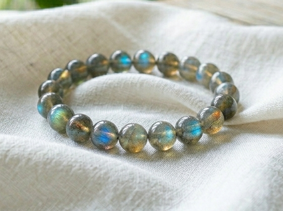

ゆっこ様
詳細のご希望、ありがとうございます。
ゆっこ様のために選んだ石について、
詳しくお伝えしますね。
ゆっこ様の命の流れを視させていただき、
今のゆっこ様に最も必要な石を3つ選びました。
ゆっこ様は、清流のような人です。
静かに、深く、確実に染み込んでいく。
相手の変化に気づく。
言葉にならない気持ちを汲み取る。
「なんとなく、こうなりそうだ」という直感が、
そのまま現実になる。
そういう力が、ゆっこ様の命に刻まれています。
でも──
「何かしなければ」という焦りが出ると、
深く考えすぎて動けなくなる。
今はとくに、その感覚が出やすい時期です。
来年から、光が差し込み始めます。
その流れを迎えるために、
ゆっこ様のエネルギーと
住吉大神（すみよしのおおかみ）が
深く共鳴する3つの石を選びました。

海と清水のエネルギーを持つ石。
住吉大神との共鳴が特に強い石です。
心の平静を保ち、
嵐の中でも正しい航路を見失わない力を
与えてくれます。
「何かしなければ」という焦りが出てきたとき、
この石がそっとその揺れを静めてくれます。

見えない守護の力を引き出す石です。
変化の中でも輝きを保ち、
状況の流れを正確に読み取る力を高めます。
ゆっこ様がもともと持っている「感じる力」──
その直感を、さらに深めてくれる石です。
「今日はそっとしておく日だ」
「今日は近くにいない方がいい」
その感覚が、より澄んで届くようになります。

深い感受性と縁の流れを整える石です。
月のように柔らかく、
静かに相手を照らす力があります。
「傍にいること」の力を最大限に引き出し、
縁を穏やかに育てていきます。
何もしていないように見えて、
確かに届いている。
その力を、この石が支えてくれます。
アクアマリン・ラブラドライト・ムーンストーン。
この3つをゆっこ様専用に組み合わせて、
一つひとつ手作りで仕上げます。
住吉大神への祈祷とエネルギーチャージを込めて、
ゆっこ様のもとへお届けします。
身につけていくうちに、
焦りが静まり、
「ただ傍にいること」への迷いが和らいでいきます。
直感が澄んでくる。
縁が、静かに育っていく感覚が出てきます。
そして来年の光が差し込むその時期に、
エネルギーが整った状態で臨めるようになります。
ゆっこ様の場合、
2027年前半から、縁に光が差し込み始める流れがあります。
パワーストーンのエネルギーが
しっかりと馴染むまでには、
通常2〜3週間ほどかかります。
今から始めることで、
来年の変化が訪れるその時期に
エネルギーが整った状態になります。
- ご注文から7〜10日以内に発送
- 追跡番号付きで安心
- 専用の浄化・エネルギーチャージ済みでお届けします
今回ご購入いただいた方には：
- パワーストーンの取扱い・浄化方法のご案内
- ご購入から3ヶ月間、気になることがあればいつでもご相談いただけます
ご希望の方は、
「ブレスレット希望」とメッセージをお送りください。
ご不明な点があれば、
お気軽にお尋ねくださいね。
嵐は、必ず凪ぎます。
ゆっこ様の縁が、穏やかに育っていきますように。